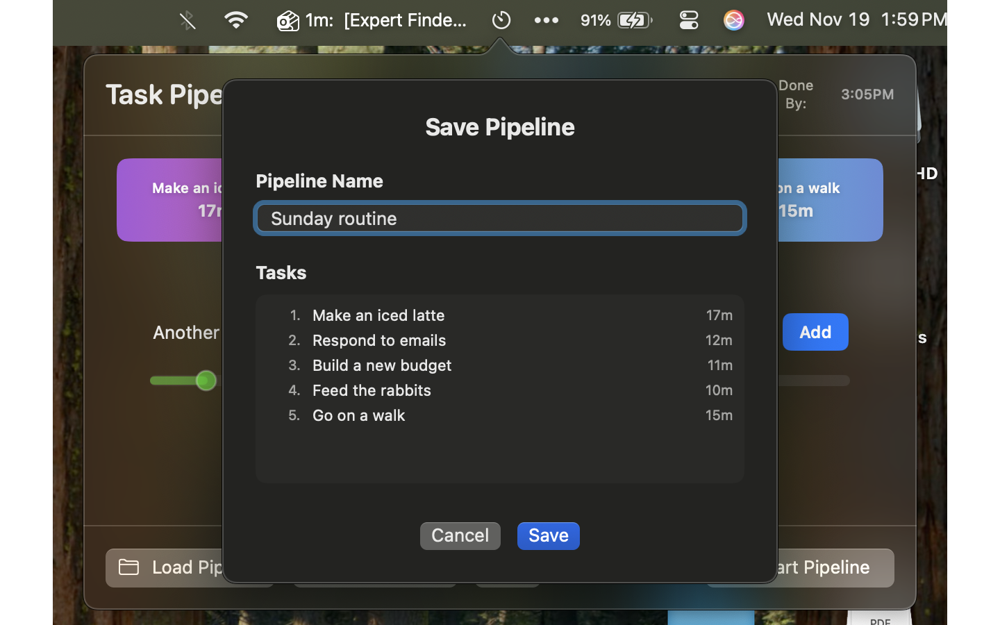
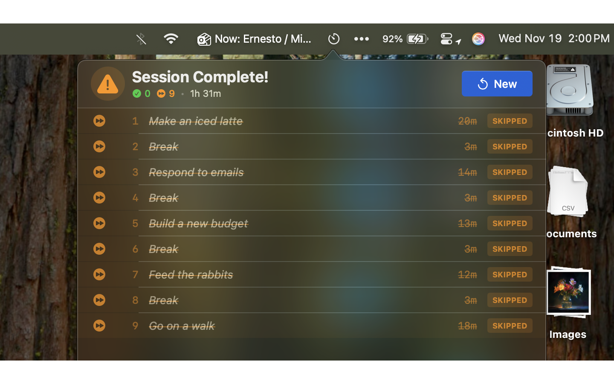
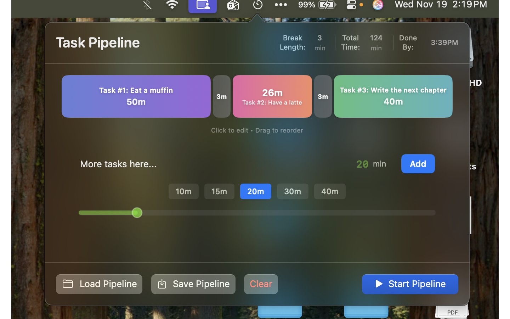
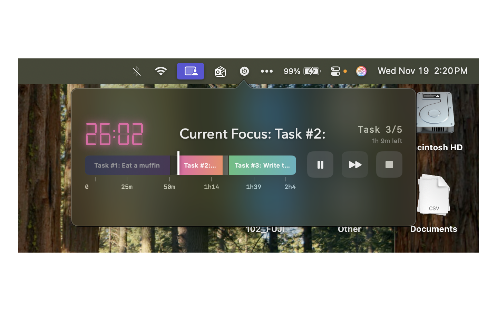

Focus on what matters
Download on the Mac App StoreRequires macOS 13.0 (Ventura) or later
Create a pipeline of tasks that automatically advance when time expires. Stay in the flow.
Prominent display shows exactly what you should be working on right now. No distractions.
See your entire task pipeline with intuitive drag-and-drop editing. Beautiful and functional.
Automatically insert breaks between tasks to maintain peak productivity throughout your day.



